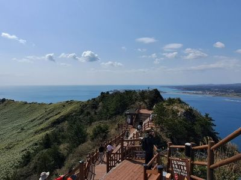

Seongsan Ilchulbong 성산 일출봉
The scenery is beautiful, and it is easy to climb. However, if you go up too fast, you will have muscle pain like I did.
The scenery is beautiful, and it is easy to climb. However, if you go up too fast, you will have muscle pain like I did.